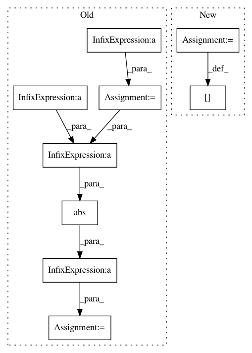

d493caa1278c158b78aa02c8f23d4f56c311f975,pymc3/variational/callbacks.py,CheckLossConvergence1,__call__,#CheckLossConvergence1#Any#Any#Any#,33
Before Change
def __call__(self, approx, hist, i):
if hist is None or i < self.window_size or i % self.every:
return
diff = ((hist[-self.window_size:] - hist[-self.window_size-1:-1])
/ hist[-self.window_size-1:-1])
mean = diff.mean()
// unbiased std of mean
std = diff.std() / (self.window_size - 1)**.5
t = abs(mean / std)
p = stats.t.cdf(t, df=self.window_size) - .5
// 1 - confidence is lower allowed p
if p < self.critical:
raise StopIteration
After Change
current = self.flatten_shared(approx.params)
delta = (current - self.prev)/self.prev
self.prev = current
delta[np.isnan(delta)] = 0
norm = delta.dot(delta)**.5
if norm < self.tolerance:
raise StopIteration
In pattern: SUPERPATTERN
Frequency: 3
Non-data size: 9
Instances
Project Name: pymc-devs/pymc3
Commit Name: d493caa1278c158b78aa02c8f23d4f56c311f975
Time: 2017-04-14
Author: maxim.v.kochurov@gmail.com
File Name: pymc3/variational/callbacks.py
Class Name: CheckLossConvergence1
Method Name: __call__
Project Name: IBM/adversarial-robustness-toolbox
Commit Name: 557622faca0328c0303b824006c5fe11cc87cca1
Time: 2018-05-09
Author: mathsinn@ie.ibm.com
File Name: art/attacks/virtual_adversarial.py
Class Name: VirtualAdversarialMethod
Method Name: generate
Project Name: IBM/adversarial-robustness-toolbox
Commit Name: 9bc56cc177b7997d6b4a30d204a08ef95a03a343
Time: 2018-05-09
Author: Maria-Irina.Nicolae@ibm.com
File Name: art/attacks/virtual_adversarial.py
Class Name: VirtualAdversarialMethod
Method Name: generate